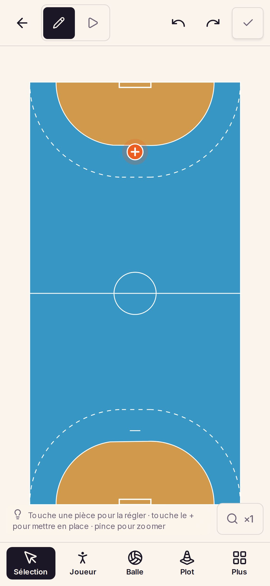
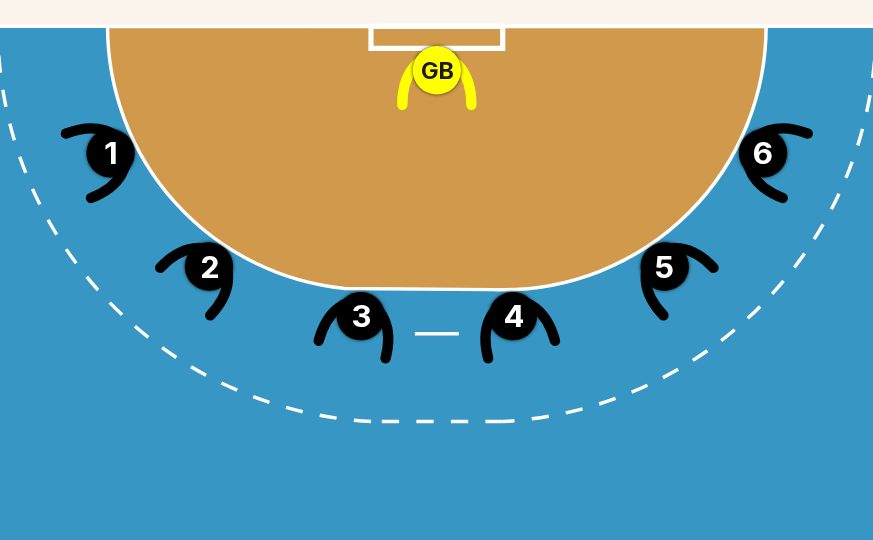
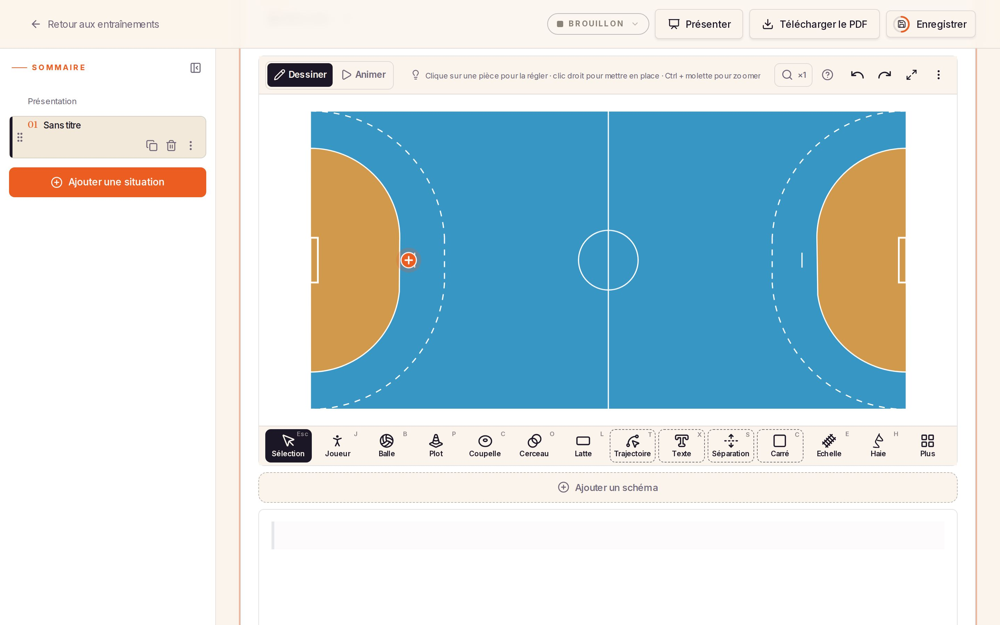

Le mode tutoriel
Une seule fiche par geste — un clip de quelques secondes par support et son explication — montrée de deux façons : en nouveauté aux coachs déjà là, en astuce aux nouveaux. Revue pour la refonte des entraînements : la barre mène aux séances, le compte est sous l’avatar, et la page Profil n’existe plus. Les astuces se retrouvent sous l’ampoule de l’éditeur et dans le compte.
Le principe
La nouveauté
Pour les coachs inscrits avant sa sortie. Étiquette et bulle, comme Animer aujourd’hui. Elle expire six semaines après la sortie : un coach qui arrive ensuite ne voit jamais de « Nouveau » sur ce qui existait avant lui. La refonte elle-même aura la sienne.Le mode tutoriel
Activé à l’inscription. Chaque geste se présente la première fois qu’il sert, sur la liste comme dans l’éditeur : une bulle à la fois, deux par session au plus, jamais en Présenter ni pendant un tracé. Il se met en veille quand le coach a fait le tour.Toujours retrouvable
Dans l’éditeur, l’ampoule de la ligne d’aide ouvre les astuces du schéma. Partout ailleurs, le panneau du compte, sous l’avatar, porte l’interrupteur du mode et la page Astuces, qui les rassemble toutes.Un nouveau coach
Le mode est actif dès l’inscription. Il se présente une fois, puis se fait oublier : les astuces arrivent quand le geste sert, d’abord sur la liste, puis dans l’éditeur.
Aucune séance pour l’instant. Le bouton orange en crée une.
Bienvenue, coach
Chaque geste se présente en quelques secondes, au moment où vous en avez besoin. Commencez par créer votre séance.

Les séances du comité
Des séances toutes prêtes, à ouvrir, présenter ou dupliquer dans les vôtres. Le lien n’affiche que celles du comité.


Chacun à son poste
Touchez le + devant le but : une équipe entière se pose d’un coup, chacun à son poste.
Vous avez fait le tour
Le mode tutoriel se met en veille. Toutes les astuces restent dans votre compte, sous l’avatar, pour les revoir quand vous voulez.
Un coach déjà inscrit
La refonte change assez l’application pour qu’un habitué ait aussi des choses à découvrir. Il voit d’abord la nouveauté de la refonte : une bulle à sa première visite après la mise en production, avec un clip qui fait le tour des trois destinations. Les astuces, ensuite, dépendent de ce qu’il a déjà fait.
- Aucune séance prête : il n’a sans doute jamais vraiment démarré. Le mode est allumé pour lui comme pour un nouveau coach, avec la même bienvenue.
- Au moins une séance prête : il sait faire. On lui propose le mode une seule fois, à la visite qui suit la nouveauté, jamais dans la même. « Non merci » ne revient pas ; l’interrupteur reste dans le compte.
Vos séances changent de place
En bas, Mes séances, Groupes et Communauté. Votre compte, l’import et l’administration passent sous l’avatar. Toucher une séance l’ouvre ; Présenter a son bouton.
Des astuces pour la nouvelle version ?
Quelques secondes par geste, au moment où il sert : la fiche, la vitrine du comité, les filtres, la recherche. Celles de l’éditeur que vous connaissez déjà ne reviennent pas.
Qui voit quoi
| Coach | Nouveautés | Mode tutoriel |
|---|---|---|
| Inscrit après | Jamais | Allumé |
| Inscrit avant, aucune séance prête | Bulle et étiquette, six semaines | Allumé |
| Inscrit avant, au moins une | Bulle et étiquette, six semaines | Proposé une fois |
| Tous | La page Astuces, tout, toujours | |
Une astuce déjà vue, Animer ou les postes par exemple, ne revient pas, que le mode soit allumé ou non.
Retrouver et réactiver
Essayez : touchez l’ampoule en bas à gauche de l’éditeur. La feuille donne les astuces du schéma et l’interrupteur du mode ; « Toutes les astuces » ouvre la page qui les rassemble. Touchez une astuce pour la rejouer — celles des postes jouent leur vrai clip.
Astuces
Tous les gestes, en vidéo
Pour aller plus loin : les tutoriels complets, sur YouTube.
Mon compte
Sur ordinateur
Dans l’éditeur, l’ampoule est dans la barre, en tête de la ligne d’aide ; elle ouvre la même liste en fenêtre. Sur la liste, les bulles s’ancrent à leur cible (la puce, le bandeau, la fiche) et les clips sont ceux tournés à la taille de l’ordinateur.

Astuces · le schéma
Les astuces à tourner
Une fiche par geste, pas par écran : un clip de quatre à quinze secondes, muet, qui boucle, et deux phrases. Vingt et une fiches pour l’application telle qu’elle sera après l’étape 1 de la refonte, dont sept de socle : celles qui mènent un nouveau coach jusqu’à sa première séance présentée. Quatre n’ont pas de déclencheur : elles ne vivent que dans la page Astuces.
| Démarrer | ||
|---|---|---|
| Fiche | Quand elle se présente | Clip |
| Créer une séance · socle | Mes séances vide, juste après la bienvenue | Tourné (à refaire après la refonte) |
| Rendre une séance prête · socle | Première séance ouverte en brouillon : thème, objectif, catégories | À tourner |
| Ajouter une situation · socle | Séance ouverte sans situation | À tourner |
| Le schéma | ||
| Poser des pièces · socle | Premier schéma vide | Tourné |
| Chacun à son poste · socle | Deuxième schéma vide | Tourné (postes) |
| Tracer un déplacement | Trois pièces posées, sans trajectoire | À tourner |
| Donner un poste | Un joueur sélectionné, sans poste | Tourné (postes) |
| Orientation auto | Après le premier poste donné | Tourné (postes) |
| Retourner | Page Astuces seulement | Tourné (postes) |
| Animer | Schéma d’au moins trois pièces | Tourné |
| Copier une situation | Page Astuces seulement | À tourner |
| Trouver une séance | ||
| La fiche d’une séance · socle | Retour sur Mes séances après la première séance : toucher l’ouvre, Présenter en tête, ⋯ pour le reste | À tourner |
| Les séances du comité | Première visite de la Communauté | À tourner |
| Filtrer | Deuxième visite de la Communauté, ou Mes séances au-delà d’une page | À tourner |
| Rechercher | Visite suivante de la Communauté : les suggestions qui deviennent des filtres | À tourner |
| En préparation | Page Astuces seulement | À tourner |
| En groupe | ||
| Créer ou rejoindre un groupe | Première visite de Groupes, sans groupe | À tourner |
| Inviter | Un groupe qu’on administre, sans autre membre | À tourner |
| Partager une séance dans un groupe | Mes séances, après avoir rejoint un premier groupe | À tourner |
| Devant le groupe | ||
| Présenter · socle | Première séance prête | Tourné (à refaire : le bouton change de place) |
| Imprimer en PDF | Page Astuces seulement | À tourner |
Les étapes 2 et 3 de la refonte apportent les leurs, chacune avec le change qui crée le geste : Classer une séance, À classer, Les phases de la Communauté, Piocher une situation, À la une, Mes équipes ; puis Le + propose une séance, Une situation reprise et Classer en fin de présentation. Elles sont des nouveautés pour les coachs déjà là, des astuces pour les suivants.
Les deux tutoriels longs de YouTube (« Créer son compte », « Préparer sa première séance ») restent liés depuis la page Astuces. Ils montrent l’ancienne navigation : on les refait après l’étape 3, qui change de toute façon la création d’une séance.
Où ranger les clips
Décidé : vingt et une fiches, trois supports, une soixantaine de clips d’environ 400 Ko, refaits à chaque retouche d’interface. Ils sont déposés par le script de tournage sur Cloudflare R2 et servis par medias.placeauxcoachs.fr, jamais dans Git ni sur YouTube. Un clip ne se charge qu’à l’ouverture de sa bulle ; un nom ne sert qu’une fois, pour qu’on ne télécharge jamais deux fois le même.
Sur tablette, faute de clip propre, on montre celui du téléphone : la barre du bas est la même.
À trancher
| Question | Proposé | Autre choix | |
|---|---|---|---|
| T1 | Durée de vie d’une nouveauté | Six semaines après la sortie | Jusqu’à ce qu’une part des coachs l’ait vue |
| T2 | Astuces vues, retenues… | Par compte : on change d’appareil sans tout revoir | Par appareil, comme Animer aujourd’hui |
| T3 | Qui reçoit le mode actif | Tout compte créé après sa mise en service, et les comptes existants sans séance prête ; aux autres, le mode est proposé une fois, après la nouveauté de la refonte | Les comptes nouveaux seulement, les autres l’allument depuis le compte ; ou la proposition à tous les anciens |
| T4 | Fin du mode | Veille quand les dix-sept fiches à déclencheur sont vues, ou deux mois après l’inscription | Veille dès le socle vu ; ou seulement à la main |
| T5 | La refonte a-t-elle sa nouveauté ? | Oui : une bulle, un clip, à la première visite après la mise en production | Un message par e-mail seulement |
| T6 | Les clips de la liste | Tournés après l’étape 1, une fois l’écran figé | Tournés pendant, et refaits |
Réservé au développeur · comment on y va
Cinq livraisons, chacune utile seule. Le détail est dans le plan du dépôt de code.
medias.placeauxcoachs.fr, l’autorisation des médias dans les en-têtes de sécurité, un script de tournage par fiche et par support, sur le modèle des tutoriels. Les fiches de l’éditeur d’abord, qui ne bougent pas avec la refonte.